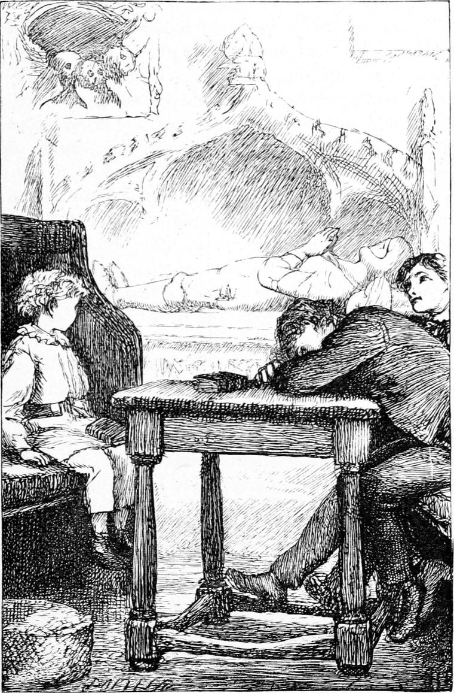

My father was a tall, staid, solemn man, who walked slowly with long strides. He spoke very little, and generally looked as if he were pondering next Sunday’s sermon. His head was grey, and a little bent, as if he were gathering truth from the ground. Once I came upon him in the garden, standing with his face up to heaven, and I thought he was seeing something in the clouds; but when I came nearer, I saw that his eyes were closed, and it made me feel very solemn. I crept away as if I had been peeping where I ought not. He did not talk much to us. What he said was very gentle, and it seemed to me it was his solemnity that made him gentle. I have seen him look very angry. He used to walk much about his fields, especially of a summer morning before the sun was up. This was after my mother’s death. I presume he felt nearer to her in the fields than in the house. There was a kind of grandeur about him, I am sure; for I never saw one of his parishioners salute him in the road, without a look of my father himself passing like a solemn cloud over the face of the man or woman. For us, we feared and loved him both at once. I do not remember ever being punished by him, but Kirsty (of whom I shall have to speak by and by) has told me that he did punish us when we were very small children. Neither did he teach us much himself, except on the occasions I am about to mention; and I cannot say that I learned much from his sermons. These gave entire satisfaction to those of his parishioners whom I happened to hear speak of them; but, although I loved the sound of his voice, and liked to look at his face as he stood up there in the ancient pulpit clad in his gown and bands, I never cared much about what he said. Of course it was all right, and a better sermon than any other clergyman whatever could have preached, but what it was all about was of no consequence to me. I may as well confess at once that I never had the least doubt that my father was the best man in the world. Nay, to this very hour I am of the same opinion, notwithstanding that the son of the village tailor once gave me a tremendous thrashing for saying so, on the ground that I was altogether wrong, seeing his father was the best man in the world—at least I have learned to modify the assertion only to this extent—that my father was the best man I have ever known.
The church was a very old one—had seen candles burning, heard the little bell ringing, and smelt the incense of the old Catholic service. It was so old, that it seemed settling down again into the earth, especially on one side, where great buttresses had been built to keep it up. It leaned against them like a weary old thing that wanted to go to sleep. It had a short square tower, like so many of the churches in England; and although there was but one old cracked bell in it, although there was no organ to give out its glorious sounds, although there was neither chanting nor responses, I assure my English readers that the awe and reverence which fell upon me as I crossed its worn threshold were nowise inferior, as far as I can judge, to the awe and respect they feel when they enter the more beautiful churches of their country. There was a hush in it which demanded a refraining of the foot, a treading softly as upon holy ground; and the church was inseparably associated with my father.
The pew we sat in was a square one, with a table in the middle of it for our books. My brother David generally used it for laying his head upon, that he might go to sleep comfortably. My brother Tom put his feet on the cross-bar of it, leaned back in his corner—for you see we had a corner apiece—put his hands in his trousers pockets, and stared hard at my father—for Tom’s corner was well in front of the pulpit. My brother Allister, whose back was to the pulpit, used to learn the paraphrases all the time of the sermon. I, happiest of all in my position, could look up at my father, if I pleased, a little sideways; or, if I preferred, which I confess I often did, study—a rare sight in Scotch churches—the figure of an armed knight, carved in stone, which lay on the top of the tomb of Sir Worm Wymble—at least that is the nearest I can come to the spelling of the name they gave him. The tomb was close by the side of the pew, with only a flagged passage between. It stood in a hollow in the wall, and the knight lay under the arch of the recess, so silent, so patient, with folded palms, as if praying for some help which he could not name. From the presence of this labour of the sculptor came a certain element into the feeling of the place, which it could not otherwise have possessed: organ and chant were not altogether needful while that carved knight lay there with face upturned, as if looking to heaven.

But from gazing at the knight I began to regard the wall about him, and the arch over him; and from the arch my eye would seek the roof, and descending, rest on the pillars, or wander about the windows, searching the building of the place, discovering the points of its strength, and how it was upheld. So that while my father was talking of the church as a company of believers, and describing how it was held together by faith, I was trying to understand how the stone and lime of the old place was kept from falling asunder, and thus beginning to follow what has become my profession since; for I am an architect.
But the church has led me away from my father. He always spoke in rather a low voice, but so earnestly that every eye, as it seemed to me, but mine and those of two of my brothers, was fixed upon him. I think, however, that it was in part the fault of certain teaching of his own, better fitted for our understanding, that we paid so little heed. Even Tom, with all his staring, knew as little about the sermon as any of us. But my father did not question us much concerning it; he did what was far better. On Sunday afternoons, in the warm, peaceful sunlight of summer, with the honeysuckle filling the air of the little arbour in which we sat, and his one glass of wine set on the table in the middle, he would sit for an hour talking away to us in his gentle, slow, deep voice, telling us story after story out of the New Testament, and explaining them in a way I have seldom heard equalled. Or, in the cold winter nights, he would come into the room where I and my two younger brothers slept—the nursery it was—and, sitting down with Tom by his side before the fire that burned bright in the frosty air, would open the great family Bible on the table, turn his face towards the two beds where we three lay wide awake, and tell us story after story out of the Old Testament, sometimes reading a few verses, sometimes turning the bare facts into an expanded and illustrated narrative of his own, which, in Shakspere fashion, he presented after the modes and ways of our own country and time. I shall never forget Joseph in Egypt hearing the pattering of the asses’ hoofs in the street, and throwing up the window, and looking out, and seeing all his own brothers coming riding towards him; or the grand rush of the sea waves over the bewildered hosts of the Egyptians. We lay and listened with all the more enjoyment, that while the fire was burning so brightly, and the presence of my father filling the room with safety and peace, the wind was howling outside, and the snow drifting up against the window. Sometimes I passed into the land of sleep with his voice in my ears and his love in my heart; perhaps into the land of visions—once certainly into a dream of the sun and moon and stars making obeisance to the too-favoured son of Jacob.